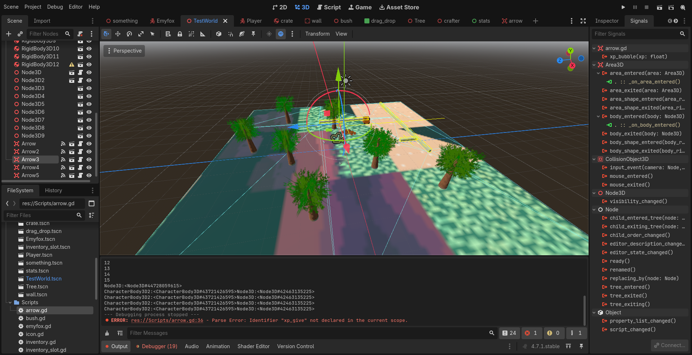
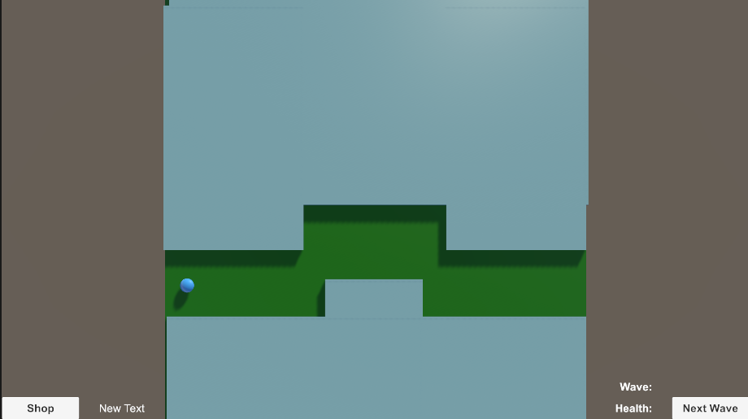
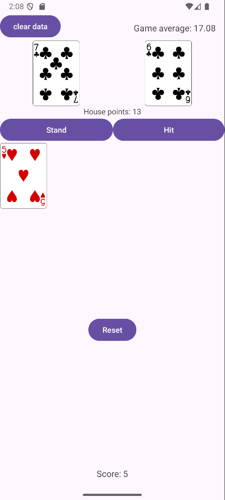

Ciaran Wham
Welcome to my webpage! Here I will be linking to various projects I have worked on, and giving a brief description of what it is, what it was for, and if there is any planned future for the projects.
- When "it just works"
- Docker
- Low level languages (C, MIPS, C#)
- Python (I learned it first!)
- Design patterns
- Microservices
- MVVM
- MySQL
- Game development
- HTML
- Static pages
- Unity
But there is much for me to work on:
- Github command line
- JavaScript
- Kotlin
- Java (not used before)
Xidoria
Xidoria is a game I started as a passion project and have had the opportunity to work on it. I do not have a perfect direction in mind for the game yet, but I have some ideas and some of the work for the not done ideas might go into future games. As for Xidoria: a 3d endless shooter arena style game with RPG elements and equipment. Not sure how that tags out exactly, but I want to have fun with it and so far I am!
10/9/2026 devlog
I have been working on this game for under a week now, and its been coming along pretty well! I have been intimidated as the line numbers get bigger and even the forethought is foretought. I want to avoid weird code and odd bugs for future development, which means I am trying to avoid janky work arounds in favor for things I understand more thouroughly. Aiming for simplicity and a little bit for elbow grease to ensure I learn a thing or two. So far the largest trouble has been models and the lack of them. I love drawing and spriting, but trying to do 3d modeling in blender has been troublesome. It has been fun aswell, but the challenge is there. I found it easiest to throw an idea out and try my best, I am trying to watch some videos to better my skills, but I fear I want to use some models that look good. For the time being I am using some billboarding images pulled off google, not the proudest, but it helps me code the bare bones. Hopefully I will remember to update this. If I don't, maybe email me?Simple Defenders
Simple defenders is a simplistically styled tower defence game. With the help of my team we were able to build this game together. Although the game is unfinished, I am the only team member still working on a fork of the game on github. The biggest challenge was getting the whole team on the same page to work on the project. The best way we found to address the issue is strong communication, and someone to lead the development. I ended up leading the development and many of the towers are based off the Cannon tower I made, and most pushes are from combining everyone's branches.
links:

Nebulous Enigma
Nebulous Enigma is a choose your own adventure webpage game. As you play you must make choices that lead you down converging or diverging paths. There are many ways to fail and win. I worked with a team of 6 total people to create documentation, diagrams, and the code. The system is not currently hosted, although the game is playable, you must host it yourself. If you would like to look more into it here is the link to the repository (and all of the documentation):
Dungeons and Dragons Tax Calculator
The dungeons and dragons tax calculator (D&D tax calculator). It is a very rudementary calculator mainy as a system to adapt to different architectures. The initial build of the calculator was not directly following an architecture, however there are 4 other architectures. The microservice architecture is the best built I think, the others are not as impressive. For this project I worked with a team (3 people total) to deliver the architectures of the systems. Note there is one static page that will remember you (with cookies) currently online on Github Pages. The biggest challenge in this project was understanding and
links:
Blackjack App
This app was made with one other person, and we made an app using a free database API and a Room Database. For this assignment we were to make an app that follows an architecture, has a database, and an API. The largest challenge was adhering to the MVVM architectual pattern. I helped my groupmate with the architectual pattern, although much of his code was not folliwing it for the most part.
